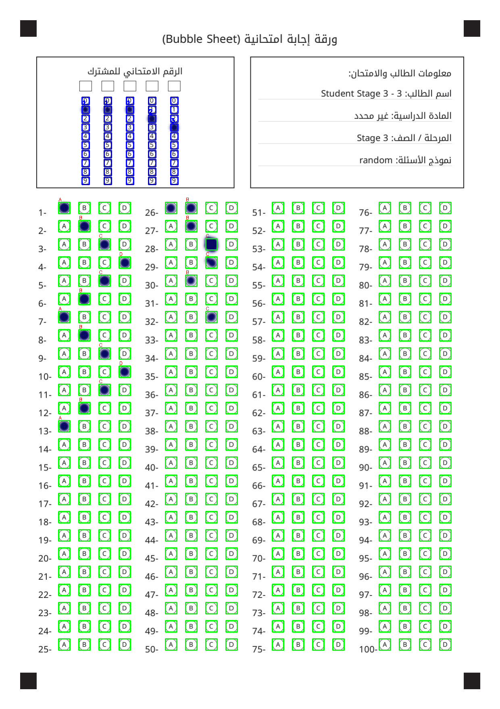
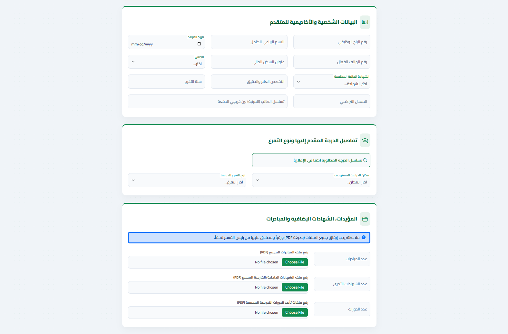

أجمع بين الشغف الأكاديمي كعضو هيئة تدريسية، والاحترافية العملية كمطور برمجيات. اطور نظماً برمجية متكاملة وأطور نماذج ذكاء اصطناعي قادرة على حل المشكلات المعقدة.
مهندس معلومات وباحث متخصص في الذكاء الاصطناعي وهندسة البرمجيات. حصلت على درجة الماجستير بامتياز، مما منحني أساساً نظرياً صلباً أستند إليه في بناء تطبيقات وأنظمة متقدمة. أؤمن بأن الكود النظيف والبنية التحتية القوية هما أساس أي مشروع ناجح.
على الصعيد العملي، قمت بتطوير وبناء أنظمة وتطبيقات برمجية شاملة للشركات باستخدام تقنيات مثل C#، Python، و Laravel. وعلى الصعيد الأكاديمي، عضو الهئية التدريسية لكلية العلوم - جامعة وارث الانبياء.

نظام متكامل لمعالجة وتصحيح الاختبارات الورقية باستخدام تقنيات الذكاء الاصطناعي.

بناء منصة للتقديم على الدراسات الاكاديمية وتعليمية تعتمد على إطار عمل Laravel المدعوم بـ Livewire لتقديم تجربة مستخدم (SPA) تفاعلية سريعة.
تطبيق ذكي لإدارة المصاريف الشخصية والميزانية. يتيح للمستخدمين تتبع نفقاتهم اليومية وعرض تقارير تفصيلية لتنظيم حياتهم المالية بسهولة وأمان عالي.
تحسين اكتشاف القضايا الجنائية الباردة باستخدام إعادة بناء الصور الشخصية المستندة إلى DCGAN. يوضح البحث المشكلة المطروحة، المنهجية المتبعة، والنتائج التي تم التوصل إليها.
مراجعة شامله لكل نماذج التعرف على الوجوه الجنائية باستخدام DCGAN، توضح التحديات والنتائج التي تم التوصل إليها.
تحسين إعادة بناء الوجوه الجنائية باستخدام نموذج U-Net المشروط، مع التركيز على النتائج العملية والتحديات التي تم مواجهتها.